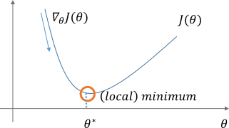
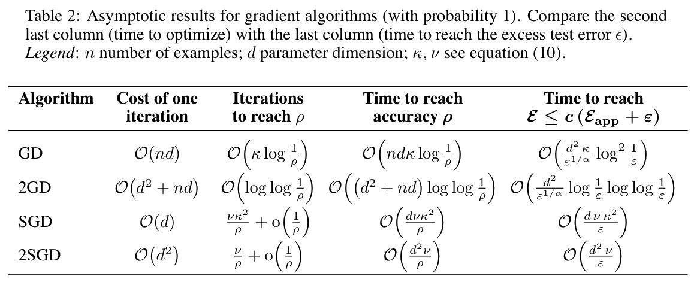

| # | date | topic | description |
|---|---|---|---|
| 1 | 24-Aug-2026 | Introduction | |
| 2 | 26-Aug-2026 | Foundations of learning | Drop/Add |
| 3 | 31-Aug-2026 | PAC learnability | HW1 |
| 4 | 02-Sep-2026 | Linear learning models | |
| 5 | 07-Sep-2026 | Labor Day Holiday | Holiday |
| 6 | 09-Sep-2026 | Principal Component Analysis | Project ideas |
| 7 | 14-Sep-2026 | Curse of Dimensionality | HW2, HW1 due |
| 8 | 16-Sep-2026 | Bayesian Decision Theory | |
| 9 | 21-Sep-2026 | Parameter estimation: MLE | |
| 10 | 23-Sep-2026 | Parameter estimation: MAP & NB | finalize teams |
| 11 | 28-Sep-2026 | Logistic Regression | HW3, HW2 due |
| 12 | 30-Sep-2026 | Kernel Density Estimation | |
| 13 | 05-Oct-2026 | Support Vector Machines | |
| 14 | 07-Oct-2026 | Matrix Factorization | |
| 15 | 12-Oct-2026 | * Midterm | Exam, HW3 due |
| 16 | 14-Oct-2026 | k-means clustering | |
| 17 | 19-Oct-2026 | Invited: Intro to Causal Learning I |
| # | date | topic | description |
|---|---|---|---|
| 18 | 21-Oct-2026 | Invited: Intro to Causal Learning II | |
| 19 | 26-Oct-2026 | * Mid-point projects checkpoint | HW4, P |
| 20 | 28-Oct-2026 | Expectation Maximization | |
| 21 | 02-Nov-2026 | Stochastic Gradient Descent | |
| 22 | 04-Nov-2026 | Automatic Differentiation | |
| 23 | 09-Nov-2026 | Nonlinear embedding approaches | HW5, HW4 due |
| 24 | 11-Nov-2026 | Model comparison | |
| 25 | 16-Nov-2026 | Model Calibration | |
| 26 | 18-Nov-2026 | Convolutional Neural Networks | |
| 27 | 23-Nov-2026 | Thanksgiving Break | Holiday |
| 28 | 25-Nov-2026 | Thanksgiving Break | Holiday |
| 29 | 30-Nov-2026 | Word Embedding | |
| 30 | 02-Dec-2026 | Project Final Presentations | HW5 due, P |
| 31 | 07-Dec-2026 | Presentation spillover / Exam prep | Classes End |
| 32 | 09-Dec-2026 | * Final Exam | Exam |
| 33 | 16-Dec-2026 | Project Reports | due |
| 34 | 17-Dec-2026 | Grades due 5 p.m. | PAWS |
| # | date | topic |
|---|---|---|
| 2–4 | Aug–Sep | ERM, PAC & Linear Models |
| 6 | 09-Sep-2026 | Principal Component Analysis |
| 7 | 14-Sep-2026 | Curse of Dimensionality |
| 9–10 | 21–23 Sep | Parameter Estimation: MLE & MAP |
| 11 | 28-Sep-2026 | Logistic Regression |
| 13 | 05-Oct-2026 | Support Vector Machines |
| 14 | 07-Oct-2026 | Matrix Factorization |
| 16 | 14-Oct-2026 | k-means clustering |
| 17–18 | 19–21 Oct | Intro to Causal Learning I & II |
| 20 | 28-Oct-2026 | Expectation Maximization |
| 21 | 02-Nov-2026 | Stochastic Gradient Descent |
| 22 | 04-Nov-2026 | Automatic Differentiation |
From $O(N)$ full-batch passes to $O(1)$ stochastic and mini-batch updates
First-order iterative minimization of an objective function $\prob{J}{\vth}$
Update Equation
$\vth_{t+1} = \vth_t - \eta \nabla_{\vth} \prob{J}{\vth_t}$

In ERM and MLE, the total objective is an average over $N$ training examples $\{(\vec{x}_i, y_i)\}_{i=1}^N$:
$\displaystyle \prob{J}{\vth} = \frac{1}{N}\sum_{i=1}^N \loss(\vth; \vec{x}_i, y_i) \implies \nabla_{\vth}\prob{J}{\vth} = \frac{1}{N}\sum_{i=1}^N \nabla_{\vth}\loss(\vth; \vec{x}_i, y_i) = \EE_{i \sim \text{Unif}}\!\Big[\nabla_{\vth}\loss(\vth; \vec{x}_i, y_i)\Big]$
$\displaystyle \hat{\vec{g}}_{\cal B}(\vth) \;\def\; \frac{1}{B}\sum_{i \in {\cal B}} \nabla_{\vth}\loss(\vth; \vec{x}_i, y_i) \implies \underbrace{\EE\!\left[\hat{\vec{g}}_{\cal B}(\vth)\right] = \nabla_{\vth}\prob{J}{\vth}}_{\text{unbiased downhill direction!}}, \qquad \underbrace{\text{Cov}\!\left(\hat{\vec{g}}_{\cal B}(\vth)\right) \approx \frac{\bm{\Sigma}_g}{B}}_{\text{variance shrinks as } 1/B}$
How many examples $B$ do we use per parameter update?
Unified Update Rule
$\vth_{t+1} = \vth_t - \eta \, {\color{#dc322f} \hat{\vec{g}}_t(\vth_t)}$
The red gradient estimate $\hat{\vec{g}}_t$ is the only difference between the three methods!
Balancing update accuracy vs. wall-clock time per step
| Method | Batch Size $B$ | Step Accuracy | Step Time | Memory | Online |
|---|---|---|---|---|---|
| Batch | $N$ | Exact ($\text{Var}=0$) | Slow $O(N)$ | High | |
| Stochastic | $1$ | Noisy ($\text{Var}=\bm{\Sigma}_g$) | Fast $O(1)$ | Low | |
| Mini-Batch | $32\text{–}512$ | Low Var ($\bm{\Sigma}_g/B$) | Fast (GPU GEMM) | Moderate |
Compute the exact gradient of $\prob{J}{\vth}$ over the entire dataset
Update Equation
$\displaystyle \vth_{t+1} = \vth_t - \frac{\eta}{N}\sum_{i=1}^N \nabla_{\vth}\loss(\vth_t; \vec{x}_i, y_i)$
We must evaluate gradients for all $N$ examples to perform just one update.
for epoch in range(number_of_epochs):
gradient = eval_gradient(loss_fun, data, params) # O(N) full pass
params = params - eta * gradient
Advantages
Disadvantages
Perform a parameter update for each single training example $(\vec{x}_i, y_i)$
Update Equation
$\vth_{t+1} = \vth_t - \eta \nabla_{\vth} \loss(\vth_t; \vec{x}_i, y_i)$
Evaluates the gradient on a single data sample ($N\times$ faster per update!).
for epoch in range(number_of_epochs):
np.random.shuffle(data) # Break ordering bias each epoch!
for example in data:
gradient = eval_gradient(loss_fun, example, params) # O(1) cost
params = params - eta * gradient
Advantages
Disadvantages
The best of both worlds: low-variance updates + GPU matrix parallelism
$\displaystyle \vth_{t+1} = \vth_t - \frac{\eta}{B}\sum_{j=i}^{i+B-1} \nabla_{\vth}\loss(\vth_t; \vec{x}_j, y_j)$
for epoch in range(number_of_epochs):
np.random.shuffle(data)
for batch in batch_iterator(data, batch_size=32):
gradient = eval_gradient(loss_fun, batch, params) # GPU GEMM!
params = params - eta * gradient
How stochastic gradient agitation escapes sharp local traps — and why $\eta_t$ must anneal to settle at $\vth^*$
Why doesn't constant-step SGD stop at the minimum $\vth^*$?
$\displaystyle \underbrace{\sum_{t=1}^{\infty} \eta_t = \infty}_{\text{can reach }\vth^*\text{ from any }\vth_0} \qquad \text{and} \qquad \underbrace{\sum_{t=1}^{\infty} \eta_t^2 < \infty}_{\text{cumulative noise variance }\sum \eta_t^2\sigma^2\text{ stays finite!}}$
Overcoming pathological curvature ($\kappa = \lambda_{\max}/\lambda_{\min} \gg 1$), narrow canyons, and oscillations
Our Toolkit: Momentum $\to$ Nesterov (NAG) $\to$ AdaGrad $\to$ RMSprop $\to$ Adadelta $\to$ Adam / AdamW $\to$ Muon
Local quadratic canyon $\prob{J}{\vth} = \frac{1}{2}\!\left(\lambda_{\min}\theta_1^2 + \lambda_{\max}\theta_2^2\right)$
Give the parameter vector physical inertia via a velocity vector $\vec{v}_t$
$\displaystyle \vec{v}_t = \underbrace{\gamma \vec{v}_{t-1}}_{\text{momentum }(\gamma \approx 0.9)} + \underbrace{\eta \nabla_{\vth} \prob{J}{\vth_t}}_{\text{current gradient pull}}, \qquad \vth_{t+1} = \vth_t - \vec{v}_t$
$\displaystyle \vec{v}_t = \gamma \vec{v}_{t-1} + \eta \nabla_{\vth} \text{J}\big(\!\underbrace{\vth_t - \gamma \vec{v}_{t-1}}_{\text{lookahead }\tilde{\vth}_t}\!\big)$
$\displaystyle \vth_{t+1} = \vth_t - \vec{v}_t \qquad (\gamma \approx 0.9)$
From coordinate-wise second moments (AdaGrad, RMSprop, Adadelta, AdamW) to matrix orthogonalization (Muon)
Duchi, Hazan & Singer (2011): Give rare/flat features large steps and frequent/steep features small steps
$\displaystyle \vec{g}_t = \nabla_{\vth}\prob{J}{\vth_t}, \qquad \underbrace{\vec{v}_t = \vec{v}_{t-1} + \vec{g}_t^2 = \sum_{\tau=1}^t \vec{g}_\tau^2}_{\text{cumulative sum of squared gradients}}, \qquad \vth_{t+1} = \vth_t - \underbrace{\frac{\eta}{\sqrt{\vec{v}_t + \epsilon}}}_{\text{effective }\vec{\eta}_t} \odot \vec{g}_t$
Tieleman & Hinton (2012): Replace AdaGrad's unbounded sum with a leaky Exponential Moving Average
$$\begin{aligned} \vec{g}_t &= \nabla_{\vth} \prob{J}{\vth_t}, \qquad \prob{E}{\vec{g}^2}_t = \gamma \prob{E}{\vec{g}^2}_{t-1} + (1 - \gamma)\vec{g}_t^2 \quad (\text{leaky average, }\gamma \approx 0.9) \\ \vth_{t+1} &= \vth_t - \frac{\eta}{\underbrace{\sqrt{\prob{E}{\vec{g}^2}_t + \epsilon}}_{\text{RMS}[\vec{g}]_t}} \odot \vec{g}_t \end{aligned}$$
Zeiler (2012): Check the physical units of $\Delta\vth$ (assuming dimensionless objective $J$):
$$\begin{aligned} \text{1. SGD / Momentum:} \quad & \text{units of } \Delta\vth \propto \text{units of } \vec{g} = \text{units of } \frac{\partial J}{\partial \vth} \propto \color{#dc322f}{\frac{1}{\text{units of }\vth}} \\ \text{2. AdaGrad / RMSprop:} \quad & \text{units of } \Delta\vth \propto \text{units of } \frac{\vec{g}}{\text{RMS}[\vec{g}]} \propto \color{#cb4b16}{1 \quad (\text{dimensionless!})} \end{aligned}$$
$$\text{3. Newton's Method (2nd Order):} \quad \Delta\vth = -\bm{H}^{-1}\vec{g} \propto \frac{\partial J / \partial \vth}{\partial^2 J / \partial \vth^2} \propto \frac{1 / \text{units of }\vth}{1 / (\text{units of }\vth)^2} = \color{#859900}{\text{units of }\vth \; \checkmark}$$
Replace the arbitrary scalar $\eta$ in RMSprop's numerator with $\text{RMS}[\Delta\vth]_{t-1}$:
$$\begin{aligned} \vec{g}_t &= \nabla_{\vth} \prob{J}{\vth_t}, \qquad \prob{E}{\vec{g}^2}_t = \gamma\prob{E}{\vec{g}^2}_{t-1} + (1-\gamma)\vec{g}_t^2 \\ \Delta\vth_t &= -\frac{\text{RMS}[\Delta\vth]_{t-1}}{\text{RMS}[\vec{g}]_t} \odot \vec{g}_t = -\frac{\sqrt{\prob{E}{\Delta\vth^2}_{t-1} + \epsilon}}{\sqrt{\prob{E}{\vec{g}^2}_t + \epsilon}} \odot \vec{g}_t \\ \prob{E}{\Delta\vth^2}_t &= \gamma\prob{E}{\Delta\vth^2}_{t-1} + (1-\gamma)\Delta\vth_t^2, \qquad \vth_{t+1} = \vth_t + \Delta\vth_t \end{aligned}$$
Fuse Momentum (1st moment $\vec{m}_t$) + RMSprop (2nd moment $\vec{v}_t$) + Zero-Init Bias Correction
$$\begin{aligned} \vec{m}_t &= \beta_1 \vec{m}_{t-1} + (1 - \beta_1) \nabla_{\vth} \prob{J}{\vth_t} \qquad &&\text{(1st moment: Momentum EMA, }\beta_1 \simeq 0.9\text{)} \\ \vec{v}_t &= \beta_2 \vec{v}_{t-1} + (1 - \beta_2) \big(\nabla_{\vth} \prob{J}{\vth_t}\big)^2 \qquad &&\text{(2nd moment: RMSprop EMA, }\beta_2 \simeq 0.999\text{)} \\ \hat{\vec{m}}_t &= \frac{\vec{m}_t}{1 - \beta_1^t}, \qquad \hat{\vec{v}}_t = \frac{\vec{v}_t}{1 - \beta_2^t} \qquad &&\text{(Corrects }\vec{m}_0 = \vec{v}_0 = \vec{0}\text{ startup bias!)} \\ \vth_{t+1} &= \vth_t - \frac{\eta}{\sqrt{\hat{\vec{v}}_t} + \epsilon} \odot \hat{\vec{m}}_t \qquad &&(\epsilon \simeq 10^{-8}) \end{aligned}$$
Notable Extensions
Why AdamW Beats Adam + $L_2$
Rule of thumb: Use AdamW if in doubt — unless optimizing 2D hidden matrices, where Muon shines!
Jordan et al. (2024) / Bernstein & Newhouse: Matrix-Aware Steepest Descent
Why $O(1)$ stochastic updates beat $O(N)$ batch solvers when data is abundant

Bottou & Bousquet (2007): Decompose total excess test risk ${\cal E}$ (recall Lectures 2–3!):
$\displaystyle {\cal E} \;=\; \underbrace{\big(\prob{R}{f^*_{\hclass}} - \prob{R}{f^*}\big)}_{{\cal E}_{\text{app}}\text{: Model Capacity}} \;+\; \underbrace{\big(\prob{R}{f_N} - \prob{R}{f^*_{\hclass}}\big)}_{{\cal E}_{\text{est}}\text{: Statistical Noise } \sim O(1/\sqrt{N})} \;+\; \underbrace{\big(\prob{R}{\tilde{f}_N} - \prob{R}{f_N}\big)}_{{\cal E}_{\text{opt}}\text{: Optimization Error } \le \rho}$